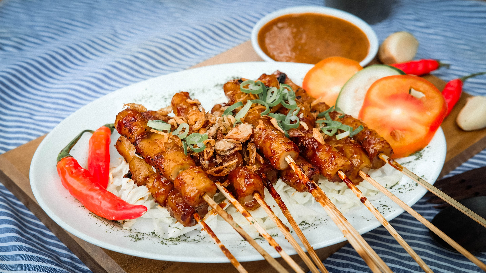

Sate Lilit
Makanan berbahan daging yang ditusuk dengan cita rasa yang enak dan lezat. Berasal dari Bali, Indonesia.
Provinsi Bali, Indonesia

Makanan berbahan daging yang ditusuk dengan cita rasa yang enak dan lezat. Berasal dari Bali, Indonesia.
Provinsi Bali, Indonesia
Sate Lilit adalah hidangan tradisional khas Bali,
Indonesia. Hidangan ini memiliki ciri khas unik, di mana
daging yang telah dicincang halus dan bumbu-bumbu khas
Bali diulas pada sebatang tusuk bambu atau batang serai,
menghasilkan "lilitan" daging yang sangat khas. Nama
"lilit" berasal dari kata Indonesia yang berarti
"membungkus" atau "melilit", mengacu pada cara daging
ditempatkan di sekitar tusuk.
Bumbu-bumbu yang digunakan dalam Sate Lilit meliputi
rempah-rempah seperti bawang putih, bawang merah,
kemiri, kunyit, serai, dan cabai. Daging yang umum
digunakan meliputi daging ayam, ikan (seperti tuna atau
ikan tenggiri), atau daging babi, tergantung pada
variasi dan preferensi pribadi. Bumbu-bumbu dan daging
dicampur hingga menjadi adonan yang halus dan kemudian
dibentuk menjadi lilitan di sekitar tusuk.
Salah satu hal yang membuat Sate Lilit menonjol adalah
rasa bumbu yang kaya dan aroma harum rempah-rempah yang
tercium ketika dimasak. Setelah diolah, Sate Lilit
umumnya dipanggang di atas bara api atau panggangan
hingga matang dan daging mengembang dengan cita rasa
yang khas. Hidangan ini sering disajikan dengan nasi
putih, sambal matah (sambal Bali khas), dan bahan
pelengkap seperti irisan mentimun, tomat, atau nasi
kuning.
Sate Lilit merupakan salah satu contoh hidangan yang
merefleksikan kekayaan kuliner Indonesia, dengan
berbagai bahan baku lokal dan bumbu-bumbu tradisional
yang menciptakan cita rasa unik. Hidangan ini juga
memiliki nilai budaya yang penting sebagai bagian dari
warisan kuliner Bali, dan sering dihidangkan dalam
acara-acara adat, pesta, atau sebagai hidangan spesial
dalam restoran.
| Bahan | Jumlah |
|---|---|
| Daging ikan (tuna/ikan tenggiri) | 300 gram |
| Daun jeruk purut, iris tipis | 2 lembar |
Bali adalah sebuah provinsi yang terletak di Indonesia bagian tengah. Provinsi ini merupakan tujuan wisata terkenal di dunia dan sering dijuluki "Pulau Dewata" karena keindahan alamnya, budaya unik, dan keragaman atraksi wisatanya.
Platform penyedia informasi seputar cita rasa, pesona dan kekayaan alam indonesia.